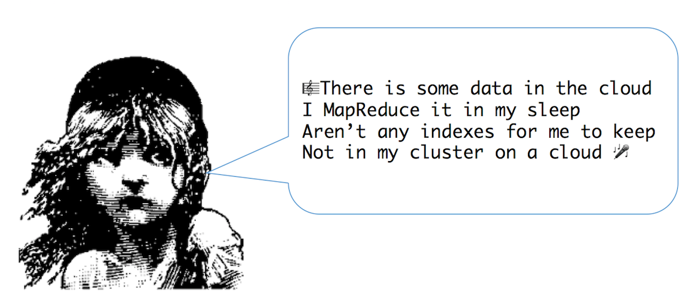
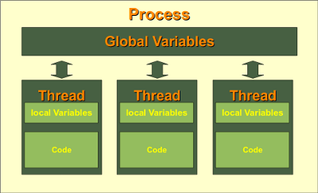
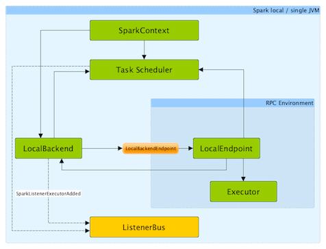
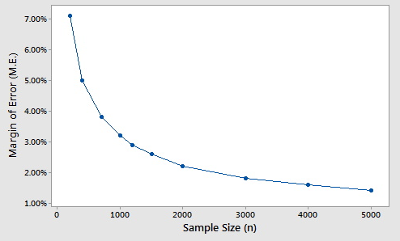
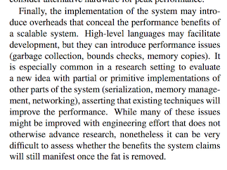
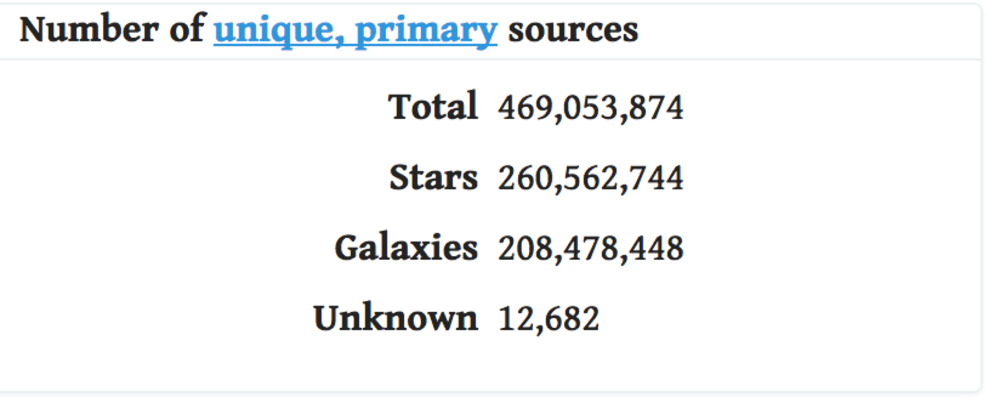
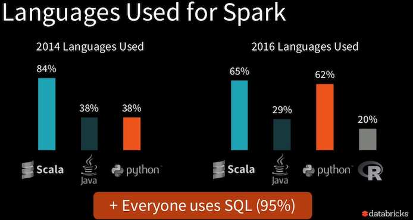

It Came from the Data Lake
Hadoop Best Practices and Anti-PatternsAbout me
Data Science + Engineering @ CapTechGitHub: @veekaybee
Website: vickiboykis.com
Agenda
Big data on a laptop
- Do you have big data?
- Laptop development
- Do you need big data? (Sampling)
- Big data cons
Big data on a cluster
- Big data pros
- Hadoop file formats
- Spark development
You don't always have big data

Les MapReduces – Word count exercise
 Les Miserables - 655k words / 3.2 MB textfileHow much data can your laptop process?
- Musketeer: "For between 40-80% of the jobs submitted to MapReduce systems, you’d be better off just running them on a single machine.""
- Databricks Tungsten: "Aggregation and joins on one billion records on one machine in less than 1 second."
- Command Line: 1.75GB containing around 2 million chess games. "This
find | xargs mawk | mawkpipeline gets us down to a runtime of about 12 seconds, or about 270MB/sec, which is around 235 times faster than the Hadoop implementation."
Checking out the file
vboykis$ head -n 1000 lesmiserables.txt
On the other hand, this affair afforded great delight to Madame Magloire. "Good," said she to Mademoiselle Baptistine; "Monseigneur began with other people, but he has had to wind up with himself, after all. He has regulated all his charities. Now here are three thousand francs for us! At last!"
That same evening the Bishop wrote out and handed to his sister a memorandum conceived in the following terms:--
Command line MapReduce
sed -e 's/[^[:alpha:]]/ /g' lesmiserables.txt \ # only alpha
| tr '\n' " " \ # replace lines with spaces
| tr -s " " \ # compresses adjacent spaces
| tr " " '\n' \ # spaces to linebreaks
| tr 'A-Z' 'a-z' \ # removes uppercase
| sort \ # sorts words alphabetically
| uniq -c \ # counts unique occurrences
| sort -nr \ # sorts in numeric order reverse
| nl \ # line numbers
46 1374 marius
47 1366 when
48 1316 we
49 1252 their
50 1238 jean
GitHub
Python MapReduce
def map_function(words):
"""Inserts each word into a dictionary
:param words: List of words
"""
# Apply the logic to the raw data
result = {}
for i in words:
try:
result[i] += 1
except KeyError:
result[i] = 1
return result
GitHub
Python MapReduce: benchmarks
pool= Pool(processes=5)
result_set = pool.map(map_function, get_filenames(), chunksize=30)
mbp-vboykis:data_lake vboykis$ time pypy mapreduce.py
('Size of files:', 3.099123327061534, 'GB')
real 2m49.590suser 6m16.262ssys 1m26.058s
mbp-vboykis:data_lake vboykis$ time pypy mapreduce.py
('Size of files:', 6.195150626823306, 'GB')
real 4m23.917suser 12m6.691ssys 1m39.279s
Valjean' - 1552776
'out' - 1580790
'little' - 1682841
'its' - 1726863
'than' - 1728864
'like' - 1804902
'very' - 1806903
'or' - 1812906
'A' - 1812906
'Marius' - 1812906
'we' - 1848924
'did' - 1852926
'so' - 1860930
'This' - 1890945
'more' - 1894947
'into' - 1950975
'what' - 1968984
'my' - 1970985
'when' - 2011005
'would' - 2023011
'has' - 2081040
'two' - 2107053
'Jean' - 2273136
GitHub
MapReduce with Spark locally:
less code, more overhead

source
source

source
mbp-vboykis:data_lake vboykis$ time ./bin/spark-submit --master local[5]/ spark_wordcount.py
MapReduce with Spark
sc = SparkContext("local", "Les Mis Word Count")
logFile = "/lesmiserables*.txt"
wordcounts = sc.textFile(logFile).map( lambda x: x.replace(',',' ').replace('.',' ').replace('-',' ').lower()) \
.flatMap(lambda x: x.split()) \
.map(lambda x: (x, 1)) \
.reduceByKey(lambda x,y:x+y) \
.map(lambda x:(x[1],x[0])) \
.sortByKey(False)
print(wordcounts.take(10)) #print first 10 results
sc.stop()
GitHub
How much more accuracy can big data give?

M.E. = 1/sqrt(n)
where n = populationMargin of error measures reliability of sample. If data is unbiased, difference between sample percent and true population percent will be within margin of error 95% of the time (likelihood). Margin of error does not substantially decrease at sample sizes above 1500 in the example.
source
Sample Size on GitHub
What big data can't give you
- Data integrity
- (denormalized, naming conventions)
- SQL Query analyst speed
- Traditional data guarantees (consistency)
- Not a transactional database
The cost of a system
 In some cases, an optimized single node is better than unoptimized multiple nodes.Source
What big data can give you
- Storage of unstructured data
- Fault tolerance/availability
- A centralized place across departments
- Extremely heavy parallelized usage
- Ability to programmatically work with data
Good use cases for Hadoop
- Lots of unstructured data
- Lots of streaming data that needs to be stored quickly
- Many researchers accessing in paralell
- You have a team of people to work on it!
Good use cases for Hadoop
Sloan Digital Sky Survey Most detailed three-dimensional maps of the Universe ever made, with deep multi-color images of one third of the sky 
Hadoop Optimizations
- File Formats
- Language Optimization
- YARN Configuration
- Security
- Naming Convetions
Hadoop File Formats
- File Compression
- Avro
- Parquet
- ORC
Spark Development Languages
- Java 8 - Lambda Expressions
- Scala - Compile Time
- Python - Adoption Rate